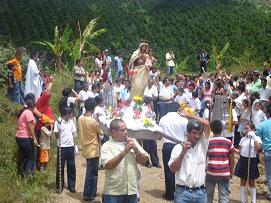

SERVICIOS COMUNITARIOS
Visitas ordinarias a las veredas
Cada mes se realizan dos misiones a partir de las 8 A.M. y
hasta las 5 P.M. con brigada de salud y visita domiciliaria con charla
de formación cristiana, santo rosario, confesiones y
celebración eucarística. Se realizan bautismos con la
debida preparación. Las listas de visitas a las veredas se
establecen en la reunión de animadores rurales, sin embargo
también se acompañan extraordinariamente en los
novenarios y otros momentos importantes. Tanto los vicarios
cooperadores como el párroco visitan y acompañan las
veredas.